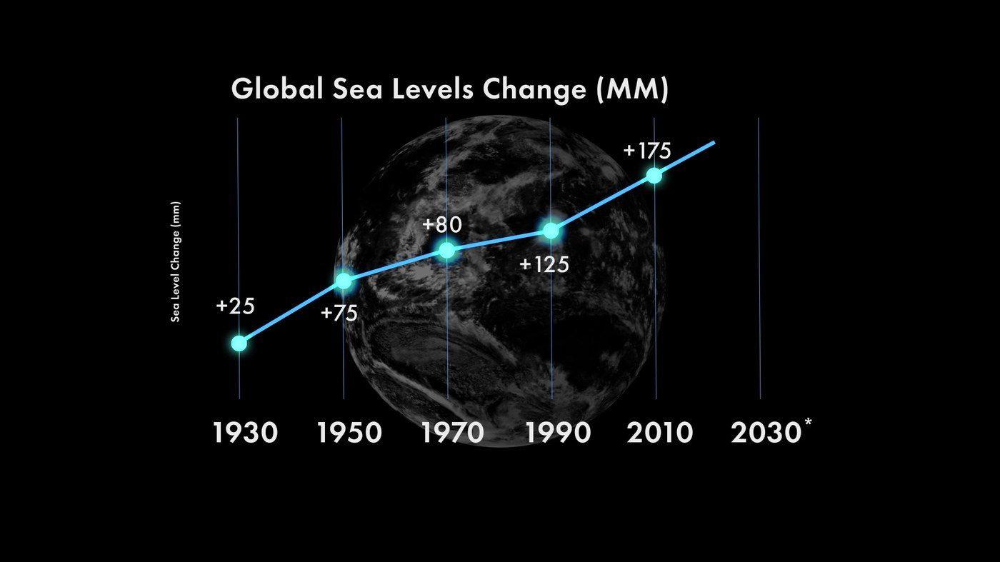
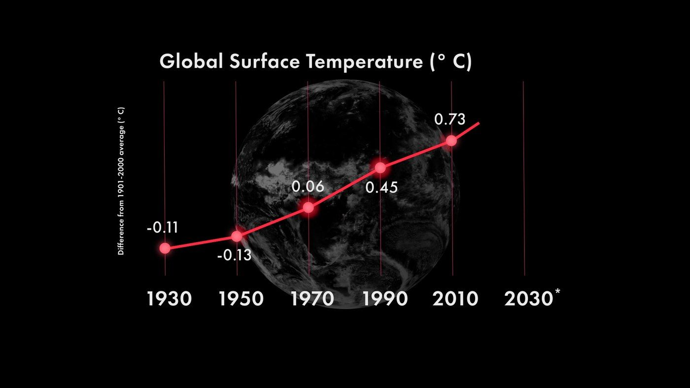
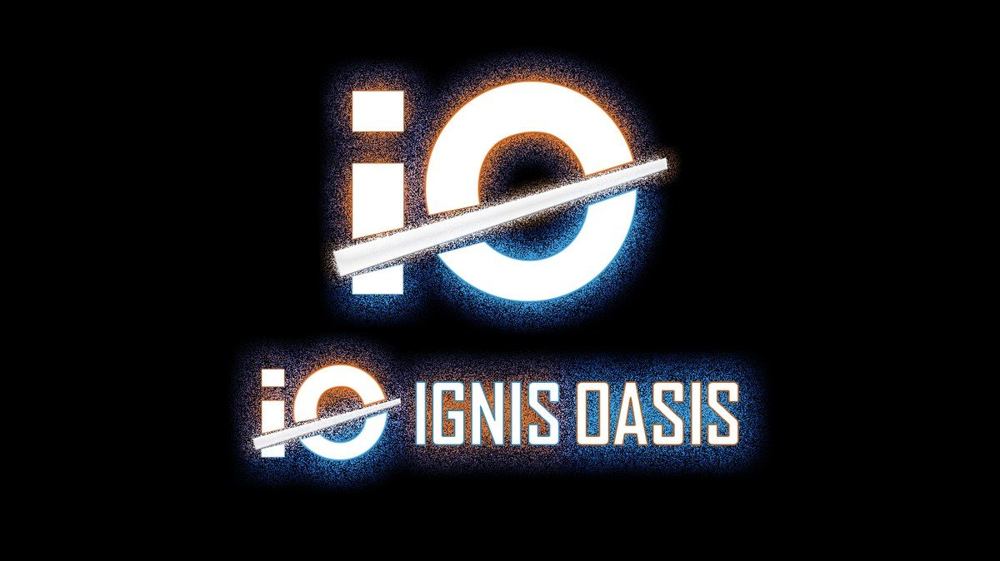
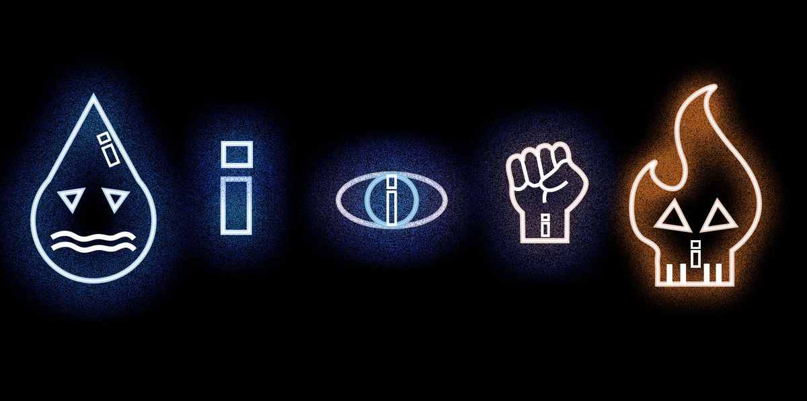
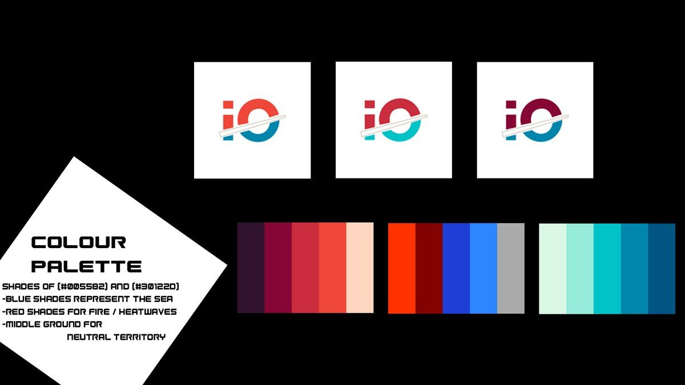

Case 01 · Campaign
Ignis Oasis
기후 정보는 넘치는데, 아무도 위기로 느끼지 않았습니다. 설명을 늘리는 대신 메시지를 한 문장으로 줄이고, 채널마다 다른 일을 맡겼습니다.
문제
- 기후 정보는 이미 넘치지만 위기로 체감되지 않는다
- 먼 미래의 문제로 여겨 지금의 행동으로 이어지지 않는다
- 내 행동 하나가 바꿀 수 있는 게 있느냐는 회의감
타깃
SNS를 많이 쓰는 20–30대 도시 거주자. 관심은 있지만 행동하지 않는 그룹.
인사이트
정보를 더 주는 것으로는 움직이지 않는다.
메시지
매니페스토 Community. Awareness. Action.을 세우고, 슬로건 "If we burn, you burn with us."로 압축했습니다. 두 세계가 맞잡은 손을 그린 충돌 포스터에는 "We either drown or burn."을 올렸습니다.
크리에이티브
Fire vs Water. 인류가 사라지는 두 방식을 색으로 대립시켰습니다. 빨강은 폭염과 산불, 파랑은 해수면 상승과 침수. 이 대비를 로고, 아이콘, 데이터 차트까지 같은 규칙으로 내렸습니다.
Channel plan
인지
포스터 연작
오프라인에서 알아채게만 합니다. 한 장으로도, 여러 장을 나란히 붙여도 성립하게 설계했습니다.
확산
22초 모션 인포그래픽
SNS에서 소비되는 길이에 맞춰 정보량을 줄였습니다. 인지, 위기감, 행동 유도 순서로 컷을 배치했습니다.
참여
웹사이트 목업
관심을 행동으로 넘기는 종착점입니다.


Brand system · 19p Organisation Guidelines



로고 최소 크기 202 × 133px가로·세로 2방향, 이름 포함·미포함 버전
서체 폴백 규칙Agency FB를 쓸 수 없으면 Berlin Sans FB, 그다음 Arial
서체 역할 분리헤드라인·로고와 보조 텍스트의 굵기를 나눠 지정
인쇄 대응CMYK 출력에서 필터 효과가 살지 않는 걸 발견하고 포스터를 다시 작업
현업에서
한 문장의 메시지를 정한 뒤 채널마다 맡길 일을 나눠 봤습니다. 온·오프라인 캠페인 기획을 지원할 때도 같은 순서로 일하겠습니다.